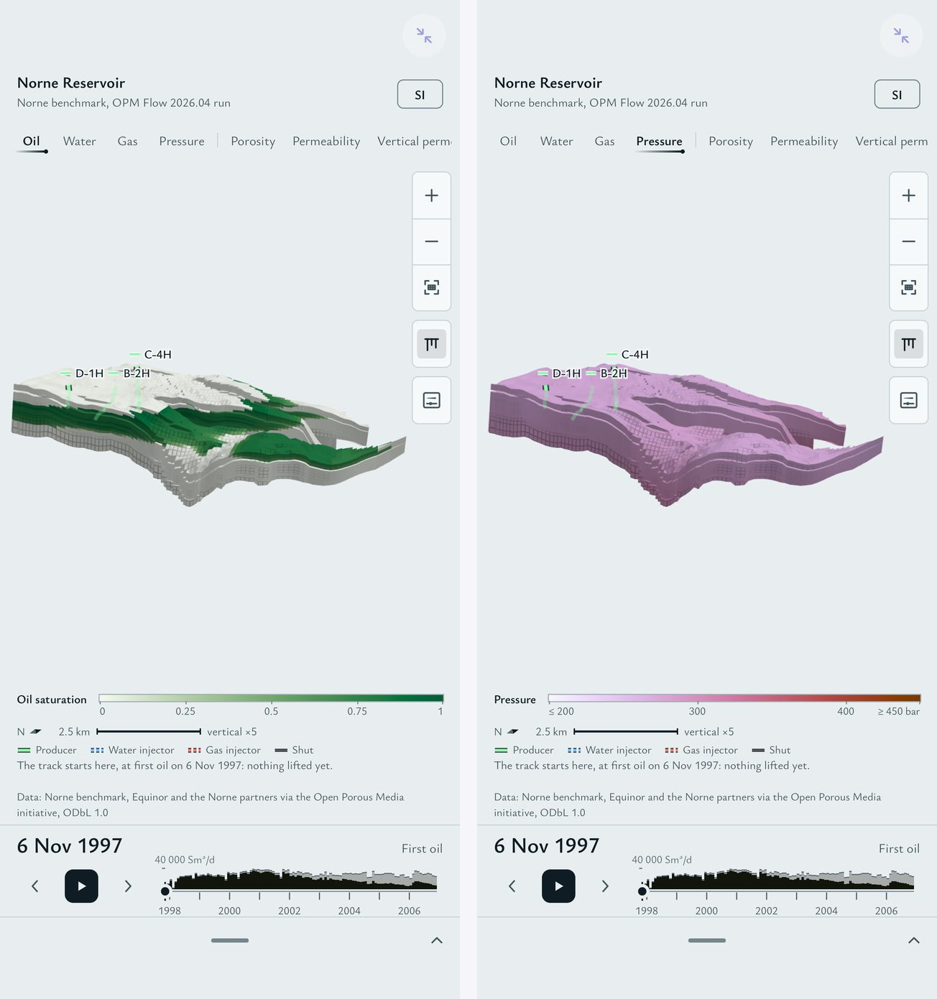

Norne: an oil field's reservoir model, from open data
One of the example apps. Built by asking an AI; runs offline in Snuggery.
Norne is an oil field in the Norwegian Sea, and it is also the reservoir engineer's favourite open dataset: Equinor and the field's partners released the full simulation model through the Open Porous Media initiative, so anyone can run the same deck the industry runs. I wanted it on a phone — the rock, and the fluids moving through it across nine years of production, with the wells that moved them.
The app is plain HTML, CSS and JavaScript with WebGL 2, no libraries, and it runs offline in Snuggery's sandbox, 26 MB unpacked. The 3D saturations and pressures come from our own run of the public deck with OPM Flow, the deck used as published except that results are written monthly. The run was checked against the Eclipse results OPM publishes for the same deck: at the end of the history, cumulative oil differs by 0.2 percent, water by 0.4, gas by 0.1, and the field pressure by 0.06 bar on average. Against the field's observed history the model produces about 7 percent less oil and 43 percent more water — that is the model's history match, not the run, and the app says so.
What is in it
- The 44,431-cell corner-point grid, coloured by oil, water or gas saturation, pressure, porosity, permeability, net-to-gross, depth, formation, region or layer.
- The production history from November 1997 to December 2006, in 110 monthly frames, with a player.
- The 36 wells, coloured by what each is doing on that date: producing, injecting water, injecting gas, shut. A well stays hidden until the date it was first opened.
- Explode the model by formation — Garn, Ile, Tofte, Tilje — by layer or by segment; cut it by I, J and K; filter cells by value; tap a cell for its numbers, double-tap to fly to it.
- Charts of field or per-well oil, water and gas rates, with a cursor at the current date.
Nothing above the reservoir is drawn. It is a reservoir viewer and only that: the grid, the fluids, the wells and their rates, at true depth — the top of the model sits 2,439 metres down, its base at 3,090 — with a vertical exaggeration you can set.

How it was built
By asking, from a brief and the public deck. The data pipeline that came back with the app downloads the deck at a pinned commit, runs the simulation — eight to ten minutes on one core — checks it against the Eclipse reference and refuses to publish if any cumulative differs by more than one percent, then writes the binary files the app reads. The OPM packages only exist for Linux, so on a Mac the pipeline runs as a GitHub Actions workflow and the artefact is downloaded; extracting from the original run reproduces the committed files byte for byte. The app itself re-reads its settings file whenever it regains focus, so the colour maps, the formations and the playback speed are yours to change without touching the code.
Source: the Norne benchmark case, published by Equinor and the Norne partners through NTNU and the Open Porous Media initiative (ODbL); the derived data keeps that licence. Listed in full in the app's About and in ATTRIBUTION.txt.
Open it in your browser · Get the ZIP for an iPhone with Snuggery · All the examples